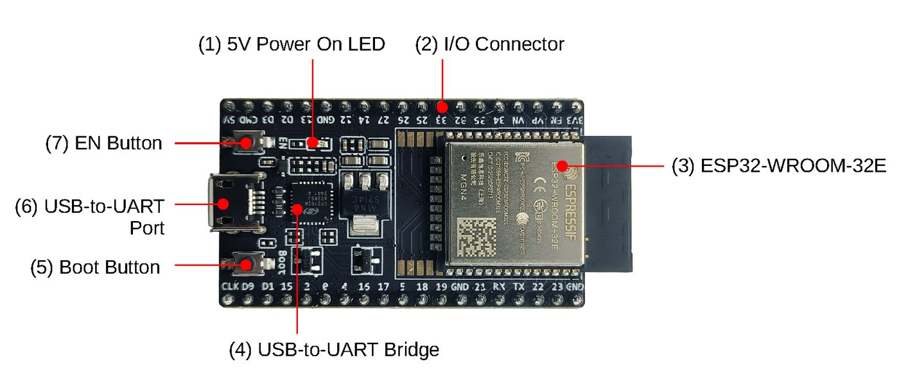
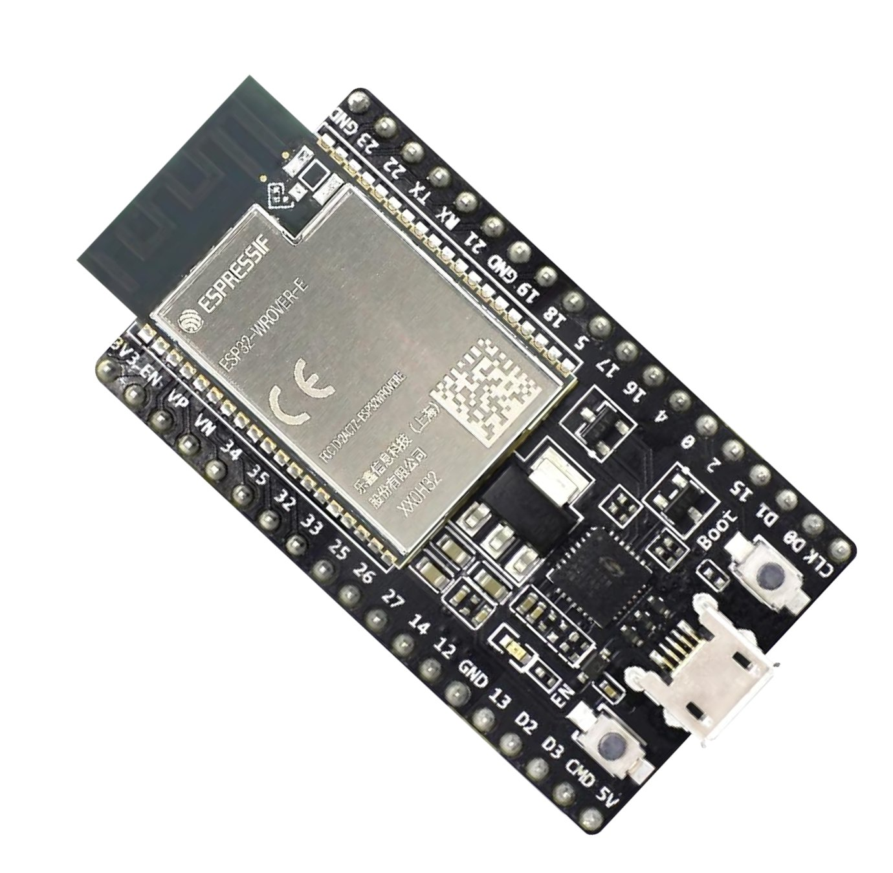
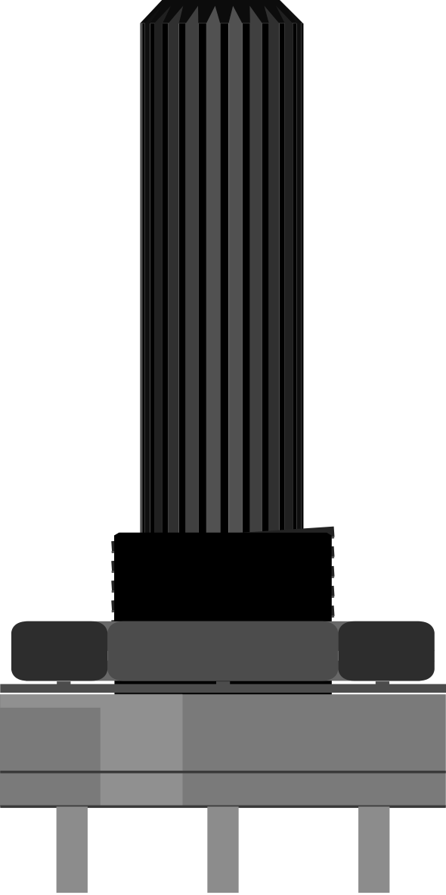
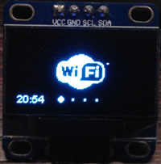
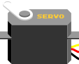

ESP32 را از صفر مطلق یاد بگیر
حتی اگر تا امروز نمیدانستی ولتاژ چیست. هر مفهوم با مثال روزمره، عکس واقعی، نقشه سیمکشی رنگی، کد خط به خط و شبیهساز Wokwi توضیح داده میشود؛ طوری که آخر دوره یک ایستگاه هواشناسی متصل به اینترنت را خودت بسازی.

این دوره چطور کار میکند؟
🧒 از صفر مطلق
هیچ پیشنیازی لازم نیست. ولتاژ، جریان و مقاومت را هم از اول با مثال لوله آب میگوییم.
🔍 کد بدون توضیح نداریم
همه برنامههای کامل دوره با کامپایلر واقعی ESP32 (هسته 3.3.12) آزمایش شدهاند. زیر هر کد، توضیح تکهتکه هست: هر بخش چه میکند و چرا این روش انتخاب شده. روی هر توضیح کلیک کن تا خطهایش در کد روشن شود.
🔌 نقشه سیمکشی استاندارد
قرمز برای تغذیه، مشکی برای زمین، رنگی برای سیگنال. همراه با جدول اتصال سیم به سیم.
🟢 بدون خرید سختافزار
۴۰ مدار فایل آماده Wokwi دارند تا رایگان در مرورگر شبیهسازی کنی. (بلوتوث، ESP-NOW، بهروزرسانی OTA و دوربین در Wokwi شبیهسازی نمیشوند.)
💬 واژهنامه شناور
روی کلمههای نقطهچین مثل PWM یا GPIO مکث کن (یا لمس کن) تا معنی سادهاش را ببینی.
🎯 مربی سختگیر
هر درس آزمون، تمرین و «حرف مربی» دارد. تیک «تمام کردم» را فقط وقتی بزن که همه آزمونها را درست جواب دادهای.
نقشه راه دوره
flowchart LR A["۱. سختافزار و کارگاه عملی"] --> B["۲. نصب ابزار و اولین برنامه"] B --> C["۳. ورودی، خروجی، پروتکلها و موتورها"] C --> D["۴. Wi-Fi، وب و بلوتوث"] D --> E["۵. MQTT، ESP-NOW، دوربین، FreeRTOS، OTA و API"] E --> F["۶. انرژی، هوش مصنوعی، پروژه نهایی و هر ESP32"]
این دوره را به ترتیب جلو برو. هر درس روی درس قبلی ساخته شده. اگر عجله کنی و مستقیم سراغ ESP32-CAM بروی، در اولین خطا گیر میکنی چون نمیدانی مشکل از تغذیه است، از پین است یا از کد. روزی یک درس، با انجام تمرینها، بهتر از ده درس در یک شب است.
برای شروع چه چیزی بخرم؟
برای شروع میتوانی فقط با شبیهساز Wokwi جلو بروی. برای ساخت واقعی، این کیت پایه بیشتر دوره را پوشش میدهد. لیست خرید دقیق با تعداد، مرحله خرید و درس مربوط در جعبهابزار است و نکتههای انتخاب برد در درس ۱.۲. بعد از خرید، اول درس ۱.۴ (کارگاه عملی) را انجام بده.





